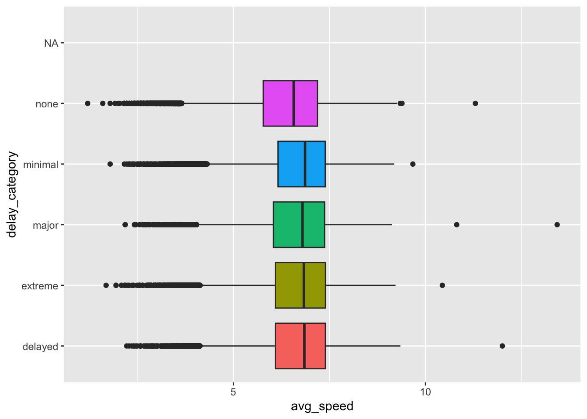
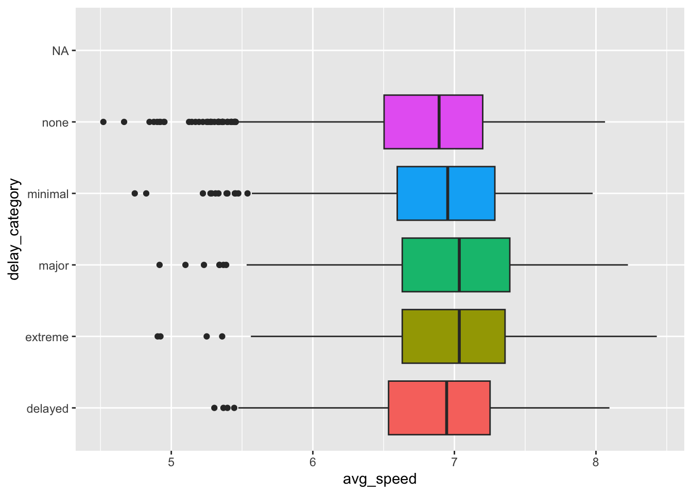

Create a new column in flights giving the average speed of the flight while it was in the air. What are the units of this variable? Make the variable in terms of miles per hour.
Suppose that you don’t think the FAA gives enough information in their definition of a delayed flight, so you come up with the following delay categories:
dep_delay <= 0 -> none
dep_delay between 1 and 15 minutes -> minimal
dep_delay between 16 and 30 minutes -> delayed
dep_delay between 31 and 60 minutes -> major
dep_delay over 60 minutes -> extreme
Use mutate() and case_when() to create a delay_category variable in the flights data frame.
Chain the last two parts together, so that the resulting dataset contains both avg_speed and delay_category. Pipe this new dataset into ggplot() to answer the question “is there a relationship between average speed and how late a flight is delayed?”
If you have time, create a new graph which only contains flights to MSP.
flights%>%mutate( delay_category =case_when(dep_delay<=0~"none",dep_delay<=15~"minimal",dep_delay<=30~"delayed",dep_delay<=60~"major",dep_delay>60~"extreme"), avg_speed =distance/air_time)%>%ggplot(aes(y =delay_category, x =avg_speed, fill =delay_category))+geom_boxplot()+theme(legend.position ="none")
Warning: Removed 12534 rows containing non-finite outside the scale range
(`stat_boxplot()`).

flights%>%filter(dest=="MSP")%>%mutate( delay_category =case_when(dep_delay<=0~"none",dep_delay<=15~"minimal",dep_delay<=30~"delayed",dep_delay<=60~"major",dep_delay>60~"extreme"), avg_speed =distance/air_time)%>%ggplot(aes(y =delay_category, x =avg_speed, fill =delay_category))+geom_boxplot()+theme(legend.position ="none")
Warning: Removed 133 rows containing non-finite outside the scale range
(`stat_boxplot()`).

Source Code
---title: "`dplyr` 1: Verbs"subtitle: "Solutions"author: Stat220 -- W25format: html: code-tools: true---```{r setup, include=FALSE}knitr::opts_chunk$set(echo = TRUE)library(tidyverse)library(ggthemes)library(nycflights23)```# Warm upIdentify the verb (function) that does the following: - Picks rows by their values- Reorders the rows- Picks variables by their names- Creates new variables with functions of existing variables# Wrangling the `nycflights23` data## Part 1- Find all flights that had an arrival delay of two or more hours.- Find all flights to MSP- Find all flights that arrived more than two hours late, but left less than one hour late- (if time) Find all flights that were delayed by at least an hour, but made up over 30 minutes in flight```{r}filter(flights, dep_delay >=120)filter(flights, dest =="MSP")filter(flights, (dep_delay >=120) & (arr_delay <60))```## Part 2Use `arrange` to answer the following questions:- Which flights traveled the farthest?- Which traveled the shortest?- Which flights lasted the longest?- Which lasted the shortest?```{r}arrange(flights, desc(distance))arrange(flights, distance)arrange(flights, desc(air_time))arrange(flights, air_time)```## Part 3Create a new column in `flights` giving the *average speed* of the flight while it was in the air. What are the units of this variable? Make the variable in terms of miles per hour. ```{r}mutate(flights, avg_speed = distance/air_time)```## Part 5Suppose that you don't think the FAA gives enough information in their definition of a delayed flight, so you come up with the following delay categories:- `dep_delay <= 0` -\> none- `dep_delay` between 1 and 15 minutes -\> minimal- `dep_delay` between 16 and 30 minutes -\> delayed- `dep_delay` between 31 and 60 minutes -\> major- `dep_delay` over 60 minutes -\> extremeUse `mutate()` and `case_when()` to create a `delay_category` variable in the `flights` data frame.```{r}mutate(flights, delay_category =case_when( dep_delay <=0~"none", dep_delay <=15~"minimal", dep_delay <=30~"delayed", dep_delay <=60~"major", dep_delay >60~"extreme"))```and we can check with `select()`:```{r}mutate(flights, delay_category =case_when( dep_delay <=0~"none", dep_delay <=15~"minimal", dep_delay <=30~"delayed", dep_delay <=60~"major", dep_delay >60~"extreme")) %>%select(dep_delay, delay_category)```## Part 6*Chain* the last two parts together, so that the resulting dataset contains both `avg_speed` and `delay_category`. Pipe this new dataset into `ggplot()` to answer the question "is there a relationship between average speed and how late a flight is delayed?"If you have time, create a new graph which only contains *flights to MSP*.```{r}flights %>%mutate(delay_category =case_when( dep_delay <=0~"none", dep_delay <=15~"minimal", dep_delay <=30~"delayed", dep_delay <=60~"major", dep_delay >60~"extreme" ),avg_speed = distance/air_time ) %>%ggplot(aes(y = delay_category, x = avg_speed, fill = delay_category)) +geom_boxplot() +theme(legend.position ="none")``````{r}flights %>%filter(dest =="MSP") %>%mutate(delay_category =case_when( dep_delay <=0~"none", dep_delay <=15~"minimal", dep_delay <=30~"delayed", dep_delay <=60~"major", dep_delay >60~"extreme" ),avg_speed = distance/air_time ) %>%ggplot(aes(y = delay_category, x = avg_speed, fill = delay_category)) +geom_boxplot() +theme(legend.position ="none")```